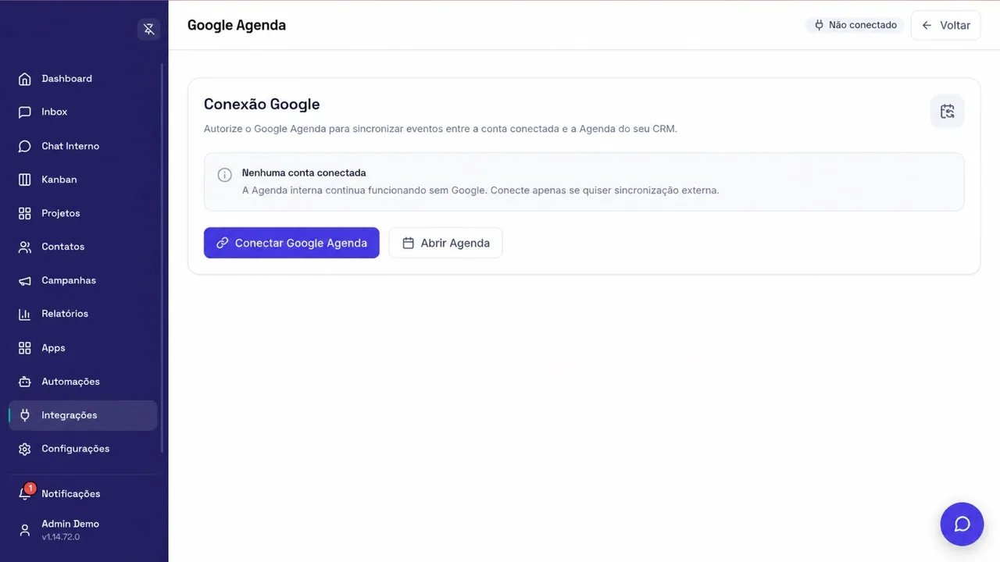

← Ver todas as integrações
AGENDAS · 9
Integrações de agenda
Conecte o calendário que sua equipe já usa e centralize seus compromissos.

O que você pode conectar
- Cal.com, Calendly, ClinicWeb, Clinicorp, Clínica nas Nuvens, Google Agenda, Outlook, Serodonto e iCloud.
- A tela mostra como iniciar a conexão com o Google Agenda.
Capturas da FunnelOps, plataforma-base do KAIROS CRM. Ver documentação visual ↗